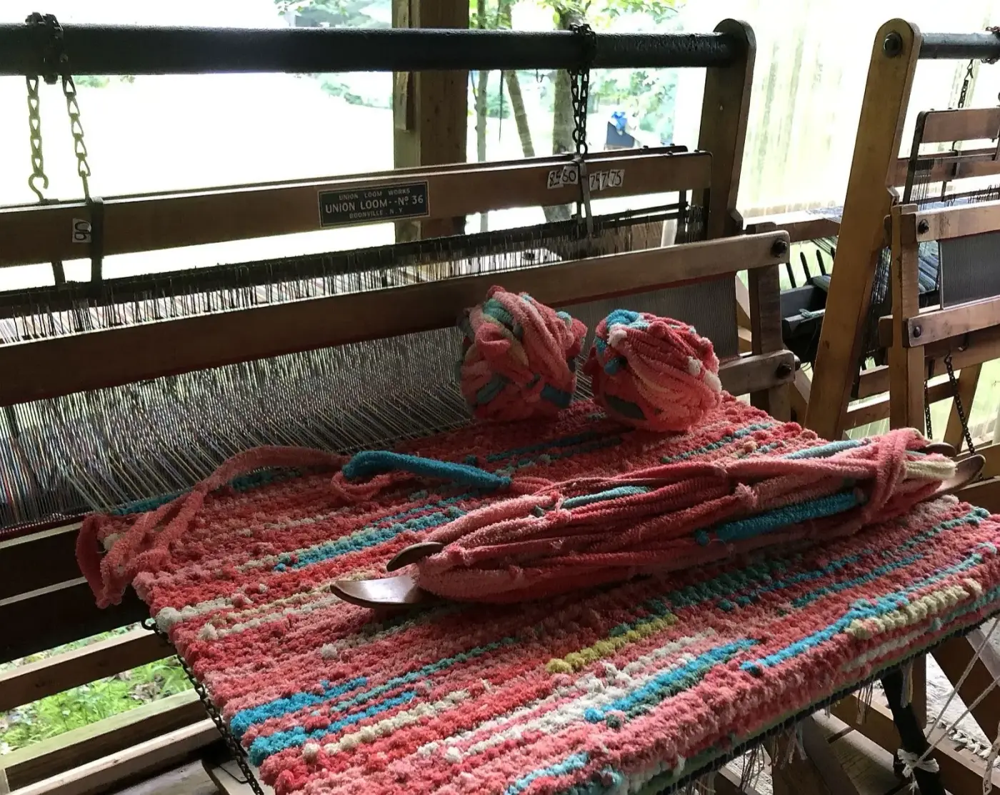
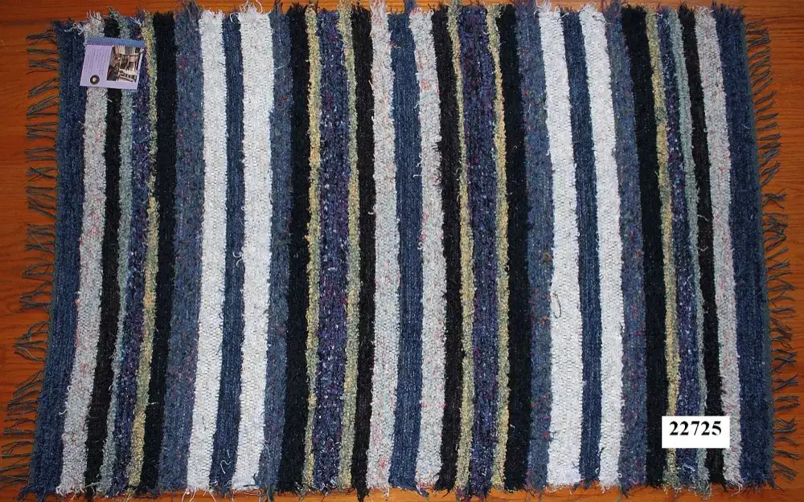
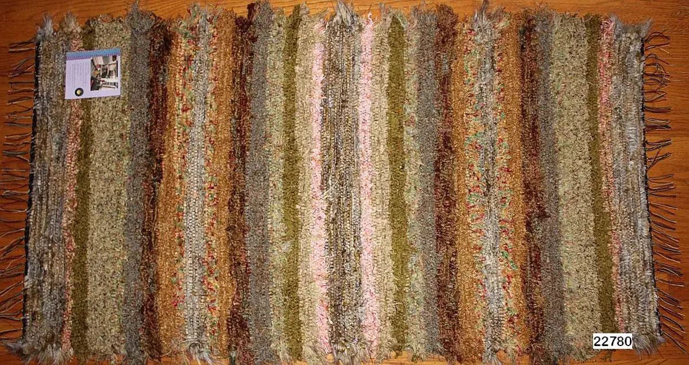
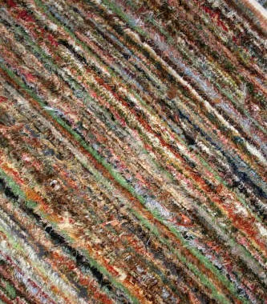
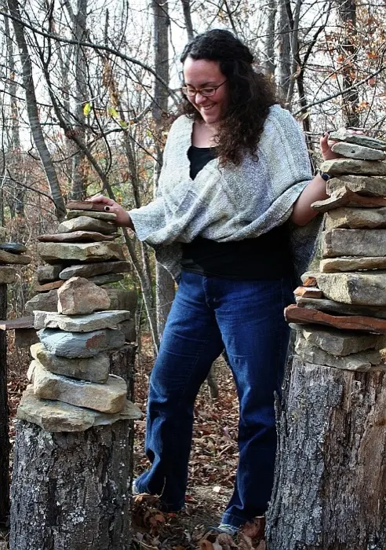
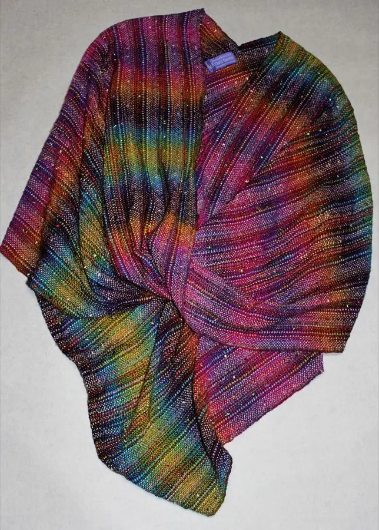
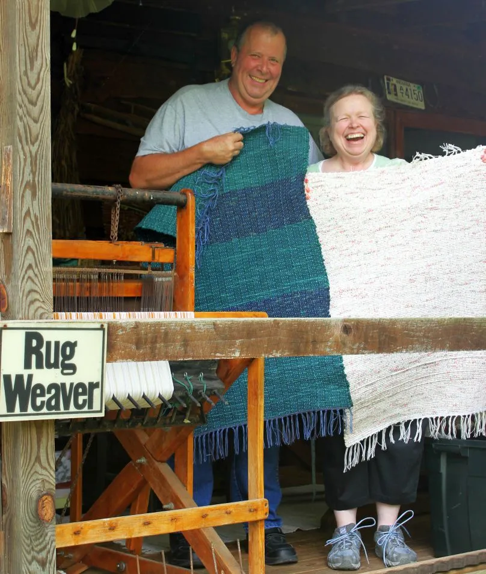
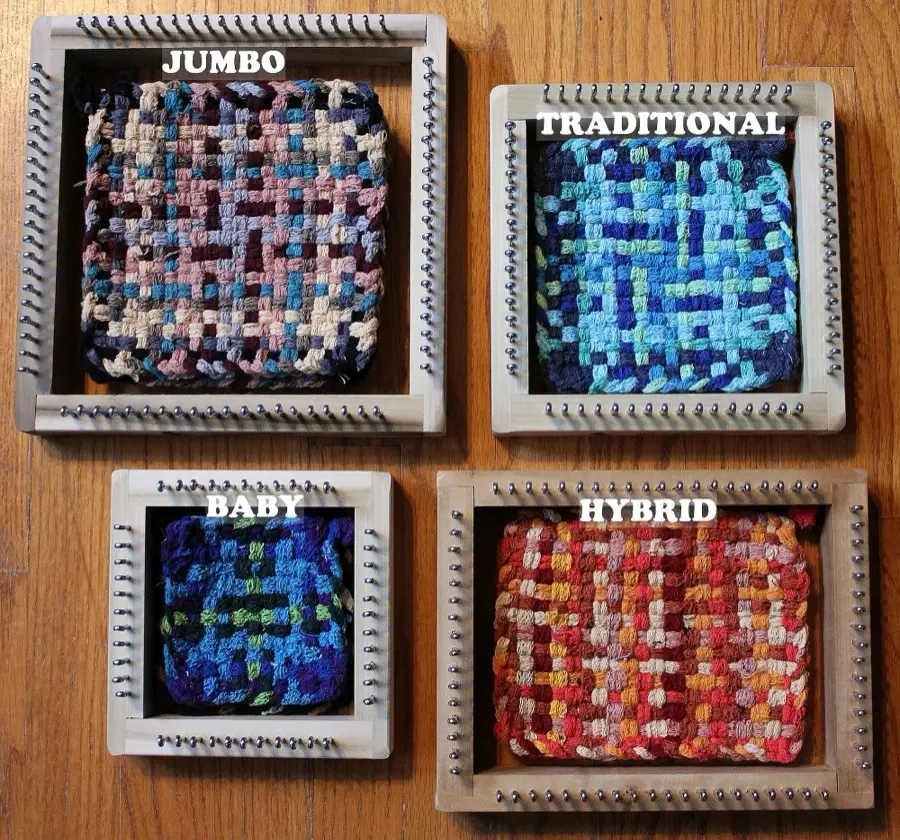

Chris Gustin, fiber artist
Weaving with an environmental conscience
Rag rugs that are soft, wonderful and woven from recycled or upcycled material, along with shawls, scarves, classes and weaving supplies, from our studio in Brown County, Indiana.
Indiana Artisan since 2008.

On the loom right now: a rag rug from recycled fabric.
Recycled rag rugs
Industry excess, turned into fiber art for the home
Chris Gustin takes recycling seriously. The material in our rugs is a byproduct of other industries, where it is considered scrap. Her unique recycled rugs turn it into contemporary fiber art: Shaggy Chic rugs, colorful cotton rugs made from SolMate Socks, and custom pieces woven with clients and interior designers.



Our mission is to keep this usable material from the waste stream and turn it into functional fiber art.
Most of our products ship through the shopping carts on the website. If something you love doesn’t have a PayPal button, just email us. We are a proud member of the Green Business Network, honored for our recycling efforts by the Brown County Solid Waste Management District.


Wearables
Shawls, wraps and scarves off the loom
A rainbow of new Möbius shawls and scarves, traditional rayon chenille scarves, ruanas and other clothing, all hand-woven in the studio. Homestead Weaving Studio produces high-quality hand-woven rugs, clothes, throws and scarves.
See the clothing
Day-weaving students with the rugs they made.
Come weave with us
Make a rug and take it home
Classes and day weaving on the rug looms run throughout the year, as weather permits. The studio’s “loom room” has six looms set up for towels, rugs and fabric, and several stay warped for make-and-take visits. It is made for visitors who want a taste of the artisan life of Brown County, and something they made themselves to take home.
- We pick the colors of fabric for the rug you want to make.
- I show you how to plan a rug; we pull the pieces and lay out the design.
- The material goes on shuttles, with a short how-to on weaving with it.
- You weave on your own; I check on you every ten minutes or so and advance the warp.
- I add the header thread, cut the rug off the loom and tie the knots for you.
“Chris met us with a warm welcome and friendly smile, and immediately put us at ease with her looms. She was a very patient and encouraging teacher, and even patched up my goofs so they don’t show.”
Sharon P., Ohio
Kits for beginners
Looper loom kits, handmade in Indiana
A fun and easy way to make coasters, potholders, purses or rugs. No experience necessary, for kids and adults alike. Each kit has everything for at least 8 colorful weavings: a handcrafted solid wood loom with smooth metal pins, an aluminum crochet hook, a generous supply of cotton blend sock loopers, and detailed instructions.
- Baby Loom Kit6.5" x 6.5" loom · $56
- Traditional Loom Kit8" x 8" loom · $57
- Hybrid Loom Kit10" x 8" loom · $58
- Jumbo Loom Kit10" x 10" loom · $59
- Potholder, Sunshine and Sock rug kitsfor rugs of any size · from $50
Kits currently ship to U.S. addresses only, because of their weight.

Looking for a beginner kit for weaving, spinning, tatting or knitting? Ask Chris what is in the studio right now.
Ask ChrisFor weavers and spinners
Looms and supplies
Good, affordable weaving and spinning supplies, shipped internationally, plus small dye runs of hand-painted yarns and rovings.
- Floor looms and Schacht looms
- Potholder, Cricket and Flip looms
- Spinning wheels
- Wool, mohair and silk for spinning
- Cone yarn and knitting yarn
- Rayon chenille and rug warp
Visiting the studio
Open by appointment, most days 11 to 5
We are in the middle of “Nowhere,” so please call or email to confirm we will be here before you make the trip. All times of year are by appointment and at the mercy of the weather. Thank you!
- Studio
- 6285 S Hamilton Creek Road
Columbus, IN 47201 - Phone
- (812) 988-8622
Chris Gustin and Bob Gustin.